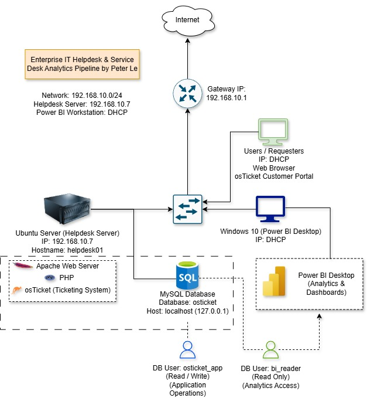

IT SERVICE MANAGEMENT
View ProjectEnterprise IT Helpdesk & Power BI Service Desk Analytics
Built an enterprise-style IT service desk environment using Ubuntu Server, Apache, PHP, MySQL, and osTicket.
Configured departments, technicians, help topics, role-based access control, and 4, 8, and 24-hour SLA policies.
Automated support ticket generation through the osTicket REST API using Bash, cURL, and JSON.
Created a SQL dataset containing 76 simulated support tickets and developed Power BI dashboards analyzing SLA compliance, resolution time, technician workload, and labor costs.